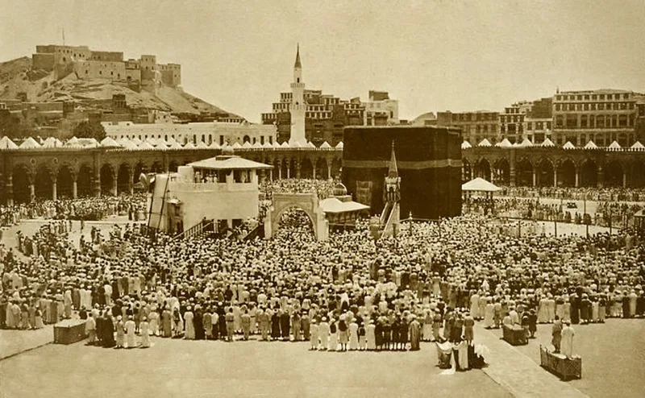
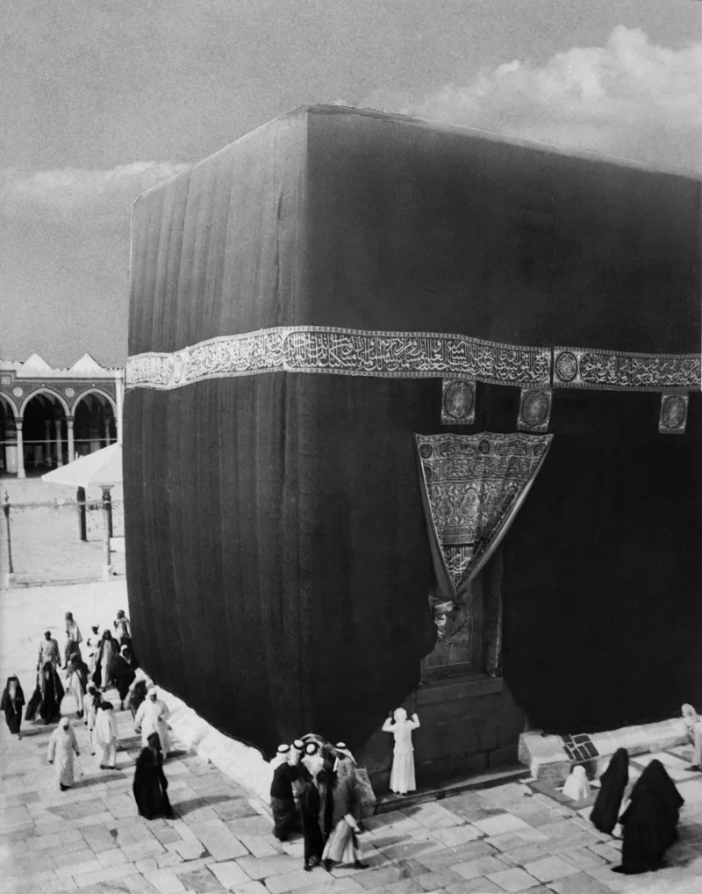

No source before Islam puts Abraham in Mecca
UnrefutedNo good counter-argument has been published by Muslim scholars.
Two accounts of Abraham
Islam runs the story through Ishmael. Abraham and Ishmael built the Kaaba in Mecca (Quran 2:127; 3:96).
The son nearly sacrificed was Ishmael. Genesis says otherwise.
God sets his everlasting covenant with Isaac, and not with Ishmael, though Ishmael is blessed (Genesis 17:19-21; 21:12). The sacrifice is of "your son, your only son Isaac" at Moriah (Genesis 22:2).
Something the Quran does not say
The Quran never names the son (Quran 37:100-107). Early Muslim scholars were split.
Al-Tabari, Islam's greatest classical commentator, concluded from the Quran's own sequence that it was Isaac.
The geography
No source before Islam places Abraham anywhere near Mecca. Not biblical, Jewish, Greek, Roman, or archaeological.
Genesis puts Ishmael's line in Paran and Shur, in north-west Arabia and Sinai, not the Hijaz.
The Muslim answer, at full strength
Islamic Awareness answers on several fronts. "Your only son Isaac" betrays later editing, since Ishmael was the only son for about fourteen years.
Genesis 21:21's Paran can be stretched toward the Hijaz. Psalm 84:6's valley of Baca is linked to Bakkah in Quran 3:96.
Sahih al-Bukhari 3364 gives a detailed account of Abraham in Mecca, taken as true history. And the Quran's silence about the son's name is deliberate.
How strong is this argument?
Strong for you, because every leg needs Genesis to be corrupt. But the Dead Sea Scrolls and the Septuagint carry Genesis 17 and 22 unchanged from centuries before Christ.
Paran is fixed near Sinai by Genesis 14:6 and Numbers 10-13. Baca is a valley on the way to Zion (Psalm 84:7).
And al-Tabari's verdict shows Islam's own scholarship could not read Ishmael out of Surah 37.
What to say
"Al-Tabari thought the son was Isaac. Have you ever read how he reached that?"



How they answer this — at its strongest
They say only son fits Ishmael, so a scribe put Isaac's name in later.
Islamic Awareness and other Muslim apologists start with the Torah's wording. Your only son Isaac, they say, betrays later Israelite editing. Ishmael was Abraham's only son for about fourteen years. So only son fits him alone. A scribe, they say, put Isaac's name in.
They read the Paran of Genesis 21:21 as reaching down to the Hijaz. They tie the valley of Baca in Psalm 84:6 to Bakkah, or Mecca, in Quran 3:96. They take the full account of Abraham in Mecca, at Sahih al-Bukhari 3364, as true history kept safe. And Islamic Awareness holds that the Quran leaves the son unnamed on purpose, so the lesson is for all. The later agreement on Ishmael, they add, rests on sound reasoning from the order of events in Surah 37.
The verdict
Strong for you: each leg needs a Genesis that no old copy shows.
Every leg of the Muslim case assumes Genesis was corrupted. No manuscript shows it. The Dead Sea Scrolls and the Septuagint carry Genesis 17 and 22 unchanged from centuries before Christ. That is long before Muhammad. The only son argument concedes the method, which is to rewrite the text to fit the claim.
Al-Tabari's verdict for Isaac shows something too. Even Islam's classical scholarship could not read Ishmael out of Surah 37. Paran is fixed near Sinai by Genesis 14:6 and Numbers 10-13. Baca is a valley on the road to Zion (Psalm 84:7). And no trace of an Abrahamic Kaaba exists before Islam. The claim lives only inside the corruption assumption that this site's core dilemma already pulls apart.
Sources
- Answering Islam (Shamoun) — Abraham and the Child of Sacrifice
- Answering Islam — Rebuttal on the sacrifice of Abraham (documents Tabari's view)
- Islamic Awareness — The Sacrifice of Abraham: Isaac or Ishmael?
- Genesis 17 (text)
- Sahih al-Bukhari 3364 (Abraham, Hagar, and Mecca narrative)